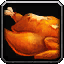
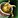
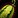
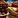
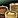

This Cooking leveling guide will show you the fastest way how to level your Cooking skill from 1 to 600 in Mists of Pandaria Classic.Major Changes in MoP
In Mists of Pandaria Classic, leveling Cooking is faster and easier than ever. You can go from 1 to 520 in about 20 minutes using mostly vendor-bought ingredients.
You must be at least level 85 to use this guide. If you're not 85 yet, check out my Cataclysm Cooking leveling guide, but it's usually better to just wait until you reach 85.
This method skips all the tedious steps from older expansions like daily quests and recipe farming. It saves you hours of time and effort. Definitely worth the wait.
Cooking Leveling Guide 1-520
You can level Cooking from 1 to 520 in MoP Classic using mostly vendor-sold ingredients. Almost all recipes give 5 skill points per craft while they’re orange. There's no need to gather rare materials or farm old recipes.
1. Shopping List
You'll only need a few ingredients that aren't sold by the vendor. You can either farm these or buy them from the Auction House:
- 42x Golden Carp
- 2x Wildfowl Breast
Everything else is sold by the vendor (see below).
2. Cooking Vendor and Trainer
Head to Halfhill Market in Valley of the Four Winds and talk to Sungshin Ironpaw. She sells all the materials you’ll need to level Cooking up to 520.
3. Buy Ingredients from Sungshin Ironpaw
Buy these ingredients from the vendor:
- 6x Instant Noodles
- 18x Needle Mushrooms
- 27x Pandaren Peach
- 6x Silkworm Pupa
- 15x Yak Milk
- 12x Rice
- 6x Red Beans
- 6x Farm Chicken
- 6x Barley
- 2x Ginseng
4. Leveling Cooking to 520
You don’t need a step-by-step list of every recipe. The process is very simple:
- Learn a new recipe from Sungshin Ironpaw.
- Craft that recipe until it turns yellow or green. Before skill 480, most recipes turn yellow after 6 crafts. After that, they usually turn yellow after 3.
- Learn the next recipe and repeat.
Don't forget to upgrade your Cooking skill at the following levels: 50, 125, 275, 350, and 425. If you skip one, you won’t gain any skill points until you train the next rank.
The total cost from 1 to 520 is around 340 gold.
Choosing a Way (520 - 600)
After you reach 520, talk to Sungshin Ironpaw again at Halfhill Market and accept the quest  So You Want to Be a Chef.... You'll need to make 5x Sliced Peaches and turn in the quest.
So You Want to Be a Chef.... You'll need to make 5x Sliced Peaches and turn in the quest.
Next, she'll give you  Ready for Greatness, which requires making 5x Rice Pudding. After that, all six Cooking specializations (called Ways) will become available.
Ready for Greatness, which requires making 5x Rice Pudding. After that, all six Cooking specializations (called Ways) will become available.
Each Way is tied to a different stat (except Brew):
- Way of the Brew - No stat gain
- Way of the Grill - Strength
- Way of the Oven - Stamina
- Way of the Pot - Intellect
- Way of the Steamer - Spirit
- Way of the Wok - Agility
You can learn and level up all six Ways on the same character. Each one has its own separate skill bar, but your overall Cooking skill is based on your highest Way. So if you reach 600 in just one Way, your Cooking will show as 600.
At skill 575, each Way unlocks Banquet recipes that provide a buff to your main stat for 10-man and 25-man raids. These Banquets work for all classes regardless of which Way created them. For example, a rogue will still get +Agility from a Banquet of the Steamer (Spirit).
To get started with a Way, accept the corresponding quest from Sungshin Ironpaw. Each quest sends you to a trainer nearby and requires a few ingredients. You can find the full list of required materials under each Way below.
No stat gain - Way of the Brew
Way of the Brew focuses on making drinks. The regular foods don't give any stat bonuses like the other Ways, but it still counts toward your overall Cooking skill. However, the Banquet recipes from this Way still provide full stat buffs.
Shopping List
- 26x Ginseng (Vendor)
- 65x Jade Squash
- 250x Green Cabbage
- 315x Witchberries
- 5x 100 Year Soy Sauce
Quests
- Start by accepting the quest
 Way of the Brew from Sungshin Ironpaw.
Way of the Brew from Sungshin Ironpaw. - Buy 1x Ginseng from Sungshin Ironpaw if you haven't already.
- Deliver the Ginseng to Bobo Ironpaw and complete the quest. He's a bit to the right of Sungshin Ironpaw, about 20 yards down with the other Cooking NPCs.
- Now you can learn new recipes from Bobo Ironpaw.
- Learn

Ginseng Tea.
Leveling Steps:
- 525-550: 25x Ginseng Tea - 25 Ginseng
- 550-576: 13x Jade Witch Brew - 65 Jade Squash, 65 Witchberries
- 576-600: 5x Banquet of the Brew - 5 Soy Sauce, 250 Green Cabbage, 250 Witchberries
You can also make Great Banquet of the Brew instead for the 25-man version. It gives the same stat bonus, just with higher quantities.
Strength - Way of the Grill
Way of the Grill focuses on strength-based food.
Shopping List
- 30x Raw Tiger Steak
- 65x

Striped Melon - 13x Jade Lungfish
- 50x Redbelly Mandarin
- 50x Raw Crab Meat
- 250x White Turnip
- 5x 100 Year Soy Sauce
Quests
- Accept Way of the Grill from Sungshin Ironpaw.
- Deliver 5x Raw Tiger Steak to Kol Ironpaw.
- Learn new Grill recipes from Kol Ironpaw.
Leveling Steps:
- 525-550: 25x Charbroiled Tiger Steak - 25 Raw Tiger Steak
- 550-576: 13x Eternal Blossom Fish - 13 Jade Lungfish, 65 Striped Melon
- 576-600: 5x

Banquet of the Grill - 5 Soy Sauce, 50 Raw Crab Meat, 50 Redbelly Mandarin, 250 White Turnip
You can also make Great Banquet of the Grill for the 25-man version. It requires slightly more materials but works the same way.
Stamina - Way of the Oven
Way of the Oven focuses on stamina-based food.
Shopping List
- 30x Wildfowl Breast
- 76x Krasarang Paddlefish
- 250x Mogu Pumpkin
- 50x Raw Turtle Meat
- 5x 100 Year Soy Sauce
Quests
- Accept Way of the Oven from Sungshin Ironpaw.
- Deliver 5x Wildfowl Breast to Jian Ironpaw.
- Learn new Oven recipes from Jian Ironpaw.
Leveling Steps:
- 525-550: 25x Wildfowl Roast - 25 Wildfowl Breast
- 550-576: 13x Twin Fish Platter - 26 Krasarang Paddlefish
- 576-600: 5x Banquet of the Oven - 5 Soy Sauce, 250 Mogu Pumpkin, 50 Krasarang Paddlefish, 50 Raw Turtle Meat
You can also make Great Banquet of the Oven if you're preparing for 25-player groups.
Intellect - Way of the Pot
Way of the Pot focuses on intellect-based food.
Shopping List
- 30x Jade Lungfish
- 13x Raw Turtle Meat
- 315x Juicycrunch Carrot
- 50x Mushan Ribs
- 50x Reef Octopus
- 5x 100 Year Soy Sauce
Quests
- Accept Way of the Pot from Sungshin Ironpaw.
- Deliver 5x Jade Lungfish to Mei Mei Ironpaw.
- Learn new Pot recipes from Mei Mei Ironpaw.
Leveling Steps:
- 525-550: 25x Swirling Mist Soup - 25 Jade Lungfish
- 550-576: 13x Braised Turtle - 13 Raw Turtle Meat, 65 Juicycrunch Carrot
- 576-600: 5x Banquet of the Pot - 5 Soy Sauce, 250 Juicycrunch Carrot, 50 Mushan Ribs, 50 Reef Octopus
You can also make Great Banquet of the Pot for the 25-man version.
Spirit - Way of the Steamer
Way of the Steamer focuses on spirit-based food.
Shopping List
- 30x Giant Mantis Shrimp
- 63x Emperor Salmon
- 65x Scallions
- 250x Jade Squash
- 50x Wildfowl Breast
- 5x 100 Year Soy Sauce
Quests
- Accept Way of the Steamer from Sungshin Ironpaw.
- Deliver 5x Giant Mantis Shrimp to Yan Ironpaw.
- Learn new Steamer recipes from Yan Ironpaw.
Leveling Steps:
- 525-550: 25x Shrimp Dumplings - 25 Giant Mantis Shrimp
- 550-576: 13x Fire Spirit Salmon - 13 Emperor Salmon, 65 Scallions
- 576-600: 5x

Banquet of the Steamer - 5 Soy Sauce, 250 Jade Squash, 50 Emperor Salmon, 50 Wildfowl Breast
You can also make Great Banquet of the Steamer for 25-player groups.
Agility - Way of the Wok
Way of the Wok is the Agility specialization.
Shopping List
- 55x Juicycrunch Carrot
- 13x Reef Octopus
- 13x Wildfowl Breast
- 50x Raw Crocolisk Belly
- 50x Giant Mantis Shrimp
- 250x Red Blossom Leek
- 5x 100 Year Soy Sauce
Quests
- Accept Way of the Wok from Sungshin Ironpaw.
- Deliver 5x Juicycrunch Carrot to Anthea Ironpaw.
- Learn new Wok recipes from Anthea Ironpaw.
Leveling Steps:
- 525-550: 25x Sauteed Carrots - 50 Juicycrunch Carrots
- 550-576: 13x Valley Stir Fry - 13 Reef Octopus, 13 Wildfowl Breast
- 576-600: 5x Banquet of the Wok - 5 Soy Sauce, 50 Giant Mantis Shrimp, 50 Raw Crocolisk Belly, 250 Red Blossom Leek
You can also make Great Banquet of the Wok for the 25-player version.